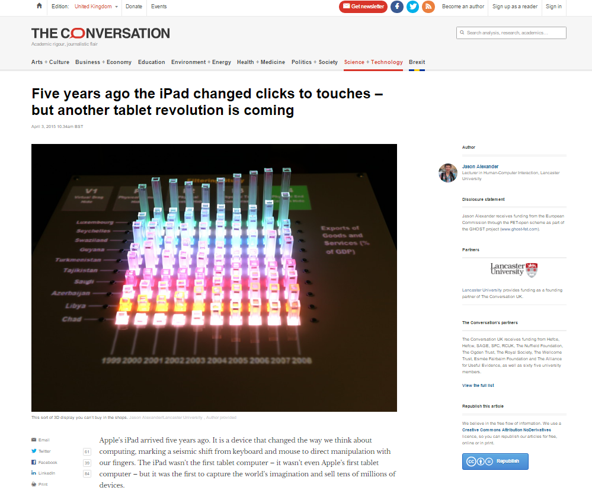

EMERGE - BBC Northwest coverage
The EMERGE prototype received coverage by BBC News in April 2015.

GHOST project - ICT Portugal
The GHOST project, which I worked on as a Research Associate at Lancaster University, received media coverage at a showcasing event at the ICT Conference in Portugal in November 2015.

EMERGE - The Conversation
The EMERGE prototype was also featured in an article in April 2015 by The Conversation, a media outlet for the academic and research community.